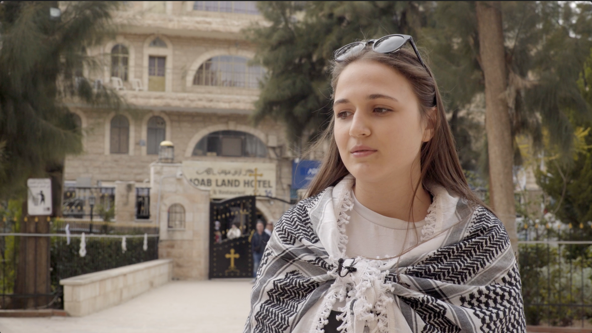
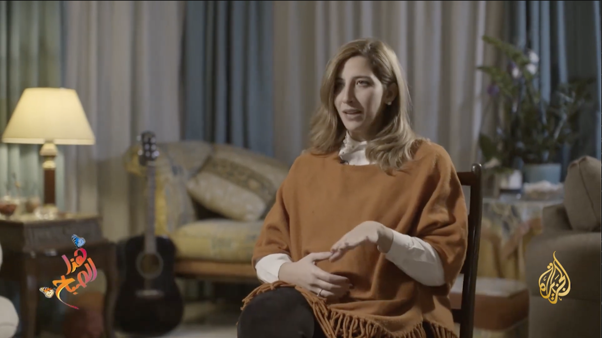
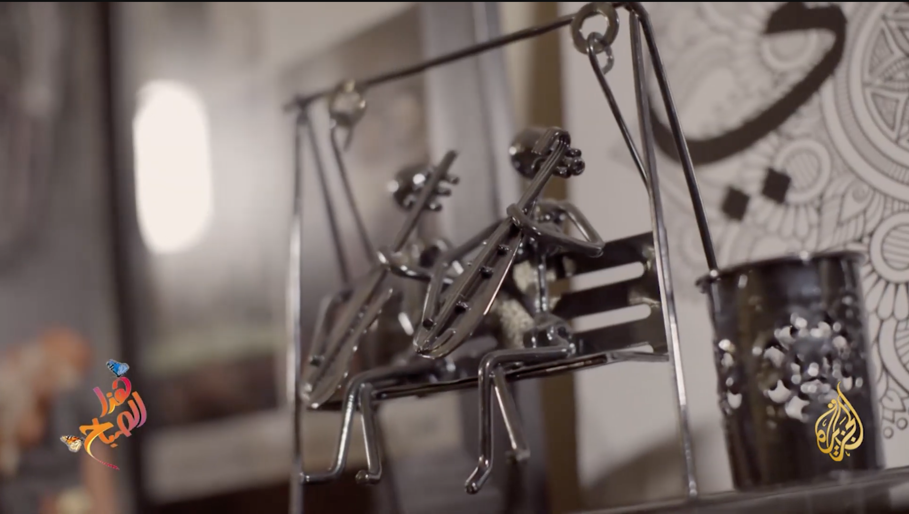
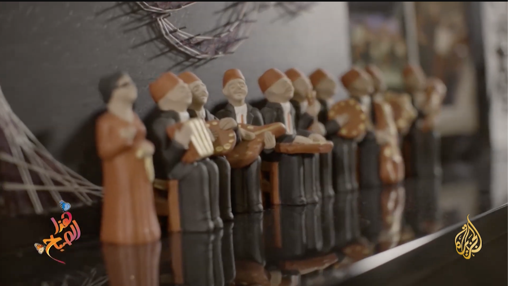
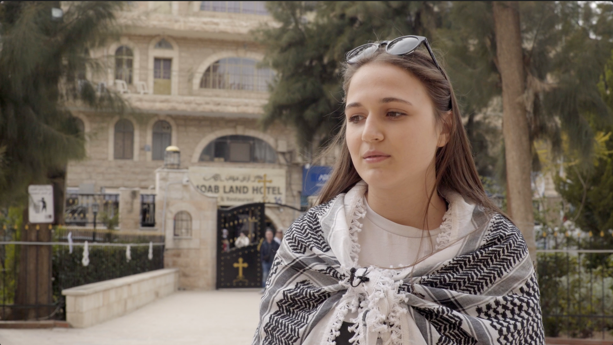
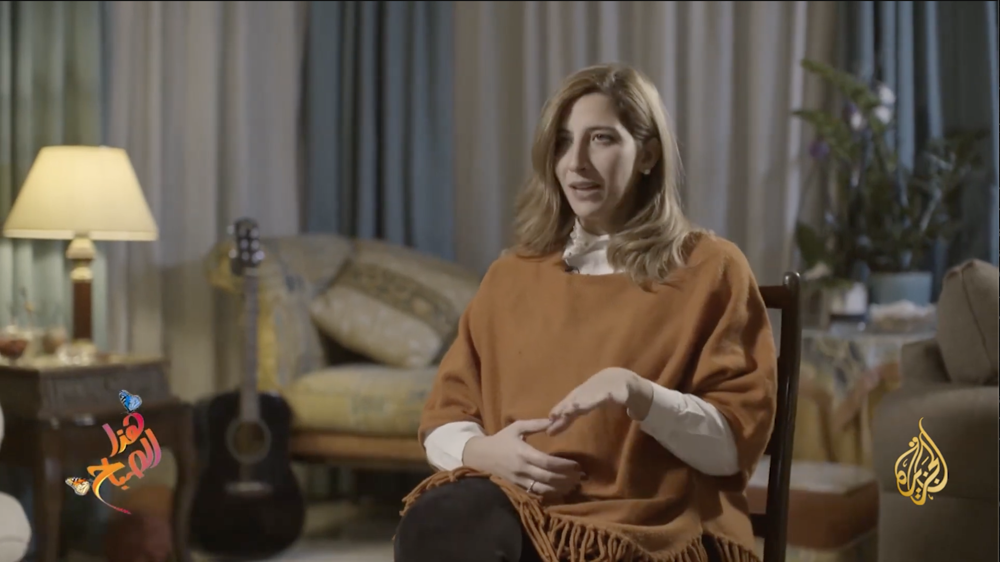
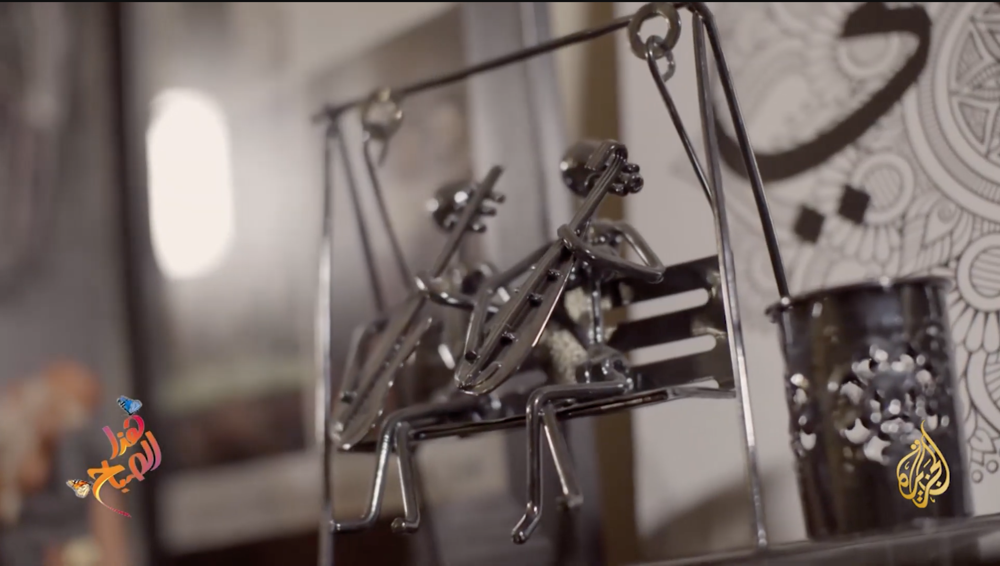
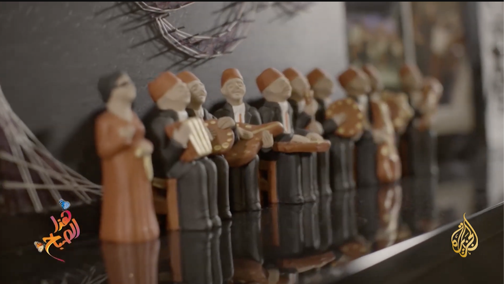

Description:
Reports This Morning is a series of reports produced by Al Jazeera. This series talks about entertainment topics that include tourism, culture, arts, and various things in all countries of the world. The series deals with striking and beautiful topics consisting of a group of people telling the story of a place, a person, an archaeological and historical site, or a dish of famous food. Or culture and tradition
 






